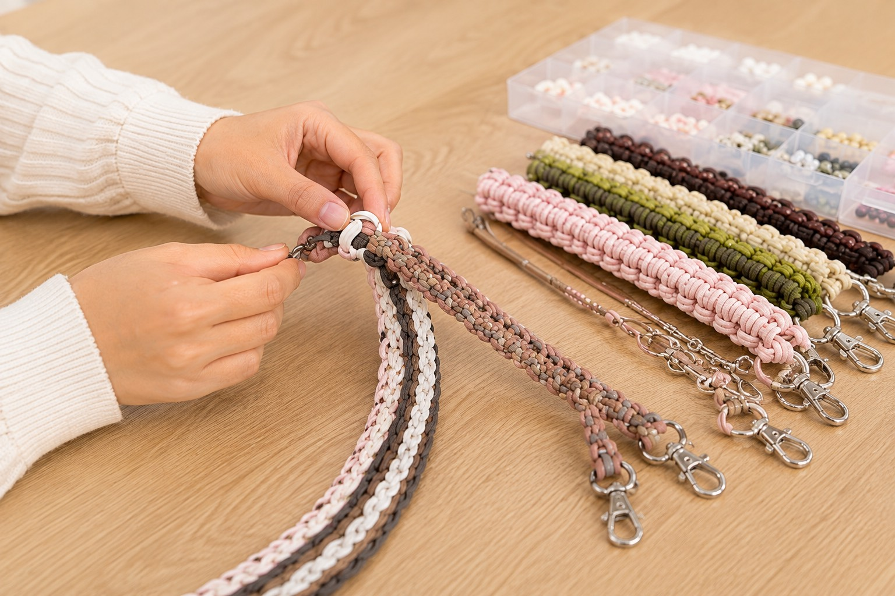

データ入力
パソコンを使った入力作業。操作に不安がある方にも、手順を確認しながら進めていただけます。
Service
一人ひとりの「できる」を大切に、安心して働き続けられる環境と仕事をご用意します。
障がいや体調面の理由から、現時点では一般企業で働くことに不安がある方が、事業所と雇用契約を結び、支援を受けながら働く福祉サービスです。
日々の仕事を通じて経験を重ね、生活リズムや働く力を整えながら、希望に応じて一般就労を目指します。

得意なこと、体調、目標は人それぞれ。紡では丁寧にお話を伺い、無理なく続けられる仕事や働き方を一緒に考えます。
パソコンを使った入力作業。操作に不安がある方にも、手順を確認しながら進めていただけます。
書類整理や検品など、集中して取り組める作業をご案内します。

犬用リードや小物などを、ひとつずつ丁寧に制作します。
一人ひとりの得意なことや目標に合わせた作業を一緒に探します。
どちらも就労を支える福祉サービスですが、雇用契約の有無などに違いがあります。
| 項目 | 就労継続支援A型 | 就労継続支援B型 |
|---|---|---|
| 雇用契約 | 事業所と雇用契約を結びます | 雇用契約は結びません |
| 受け取る対価 | 雇用契約に基づく賃金 | 作業に応じた工賃 |
| 働き方 | 雇用契約の範囲で働きます | 体調などに合わせて作業します |
利用条件や手続きは制度・自治体・個人の状況により異なります。詳しくは自治体または当事業所へお問い合わせください。